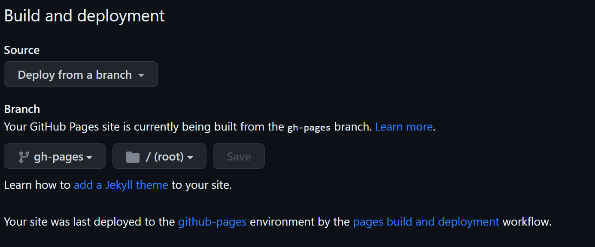

Writing narrative science#
2023.04.18, 2023.04.25, 2023.05.02
This tutorial will provide introduction to Jupyter Book, a powerful tool for writing narrative science. I also used it to create the course webpages.
What is narrative science?#
Like other trendy words in data science, we don’t have a common agreement about what it means by narrative science. Here we will use the following definition: narrative science is a concept to write a piece that provides scientific and technical details in a research project with a narrative (i.e., context-based) structure so that readers can digest all the information in the text without cross-referencing. [Dahlstrom, 2014]
We will talk more about this during the lecture discussion.
Goals#
Familiarize yourself with the MyST Markdown through some practices
Build and publish a Jupyter Book page on GitHub Pages
Jupyter Book#
The Jupyter Book package coordinates several tools in the Python ecosystem for publishing science and technical writing pieces. Some of the most relevant tools include
MyST Markdown: a derivative of Markdown, a markup language allowing users to create rich and formatted text for their documents using a simple text editor.
Sphinx: a Python-based engine to read and parse markup-formatted source files and build beautiful documents in various formats, including HTML, PDF, and EPUB.
Jupyter Book is also capable of parse source files provided as Jupyter Notebooks, making it powerful to complie research workflows for publication.
Goal 1 procedure#
Go to the test repositry you created in the previous session. Create a folder named jupyter-book and a new Jupyter Notebook file named test.ipynb.
Open test.ipynb and change the type of the first cell from code to markdown. Copy and paste the following content into that cell:
# This is a title
## Section 1
## Section 2
### Section 2.1
Press Ctrl+Enter or Shift+Enter to render this cell as Markdown. On Jupyter Lab, the markdown cells are rendered using the Jupyter Notebook Markdown, an extension of CommonMark Markdown.
MyST Markdown (which Jupyter Book uses to render the markdown content) is a superset of CommonMark Markdown, meaning it fully supports Notebook-flavored markdown and provides more functionaility for narrative science.
Now I have a few tasks for you for expanding index.ipynb: let’s see if you can figure this out by searching in the Jupyter Book documentation!
Tasks#
Display the following figure in Section 1:
{kind=link}

Display the following equation (Stefan–Boltzmann law) in Section 2:
\( P = \epsilon \sigma AT^4 \)
Display this code snippet in Section 2.1 (do not use another cell!)
#### This sample code was auto-generated using Bing's ChatGPT AI (GPT-4).
import numpy as np
from scipy import optimize
# Define the function that we want to fit
def test_func(x, a, b):
return a * np.sin(b * x)
# Generate some data with noise to fit
x_data = np.linspace(0, 4 * np.pi, 100)
y_data = 3.0 * np.sin(1.5 * x_data) + 0.5 * np.random.normal(size=100)
# Fit the data with the function
params, params_covariance = optimize.curve_fit(test_func, x_data, y_data, p0=[2, 2])
# Print the results
print(params)
Add text linking to Section 1. An example is shown here (linking to the beginning section of this document).
You might not be able to see some of the rendering on the JupyterLab/Notebook GUI; you’ll need Jupyter Book to render the MyST markdown correctly. See the next section for details.
Goal 2 procedure#
Now let’s install Jupyter Book on Callysto Hub:
!pip install jupyter-book
In the jupyter-book folder, create two files called _toc.yml and _config.yml with the following content:
_toc.yml
format: jb-book
root: index
chapters:
# - file: markdown
# - file: notebooks
_config.yml
# Book settings
title : [a project name you like]
author : [your name]
copyright : "2023"
logo :
# Execution settings
execute:
execute_notebooks : off # Whether to execute notebooks at build time. Must be one of ("auto", "force", "cache", "off")
Now you should be ready to run compile index.ipynb as a Book. Open the terminal, go to where these two files are located, and enter the following command:
jupyter-book build .
And this will generate an HTML site at _build/html. Check it out!
Publish to GitHub Pages#
We can create an automatic workflow on GitHub to run Jupyter Book and publish the HTMLs to GitHub pages every time you push any new content.
First commit and push all the changes above. On the Github repository site, make sure you have the GitHub workflow permission set to both read and write by going to Settings -> Actions -> Workflow permissions, as this figure shows:
Now go back to the repository folder on Callysto Hub. Create a file named build.yml in
.github/workflows (you might need to create this folder too). Add the following content to build.yml:
name: build-docs
on:
push:
branches:
- main
jobs:
build-docs:
runs-on: ubuntu-latest
steps:
- uses: actions/checkout@v2
- name: Set up Python 3.10
uses: actions/setup-python@v4
with:
python-version: '3.10'
- name: Install dependencies
run: |
pip install jupyter-book
- name: Build book
run: |
jupyter book build ./jupyter-book
- name: Deploy to GitHub Pages
uses: peaceiris/actions-gh-pages@v3
with:
github_token: ${{ secrets.GITHUB_TOKEN }}
publish_dir: ./jupyter-book/_build/html
Commit and push the change above. On the GitHub repository page, go to settings -> Page. Make sure to the settings like this figure shows:

Wait a moment until the yellow dot turns green:

Now you should be able to see the Notebook published on your GitHub pages at https://[YOUR_ACCOUNT_NAME].github.io/[REPOSITORY_NAME]!
More resources#
This website is also built using Jupyter Book, and its source files are hosted at here. You can use it as a template for MyST formats and publishing notebooks.
For how to configure Jupyter Book settings, see this page. (I always use this configuration template as a good start.)
Michael F Dahlstrom. Using narratives and storytelling to communicate science with nonexpert audiences. Proceedings of the National Academy of Sciences, 111(supplement_4):13614–13620, sep 2014. doi:10.1073/pnas.1320645111.